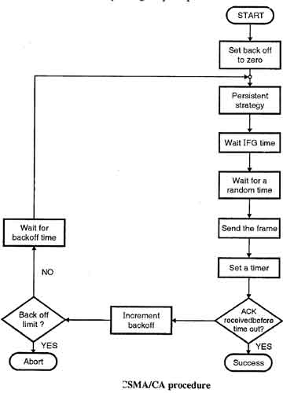

Картинката показва етапите, през които преминава алгоритъмът на CSMA/CA.

- Станцията е готова за предаване, като проверява линия с една от най-устойчивите стратегии.
- Веднага след като се намери линията да бъде празна, станцията изчаква за IFG период от време.
- След което се чака за случайно време и изпраща рамката.
- След изпращането на рамката, тя определя таймер и чака за потвърждение от приемника.
- Ако потвърждението е получено преди изтичането на таймера, тогава предаването е успешно.
- Но ако предавателната станция не поличи очакваното потвърждение преди изтичането на таймера,
тогава стойността на връщащия параметър, изчаква отново периода за връщане и преустановява линията.